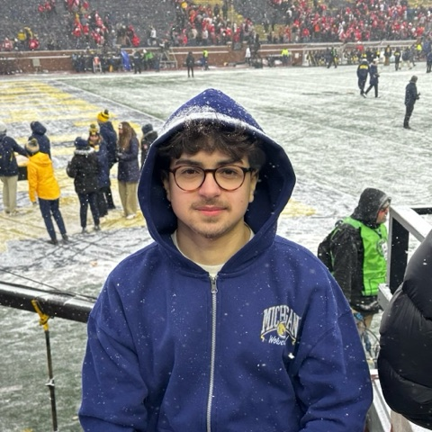
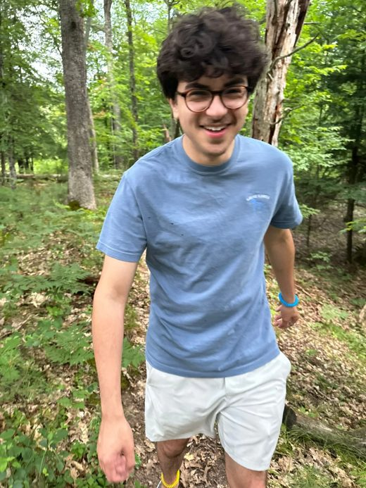

Gabriel Hassan
I'm Gabe, a CS student at the University of Michigan building tasteful, reliable software. I work in C++ and JavaScript, across systems and full-stack web.
Experience

Founder & CTO at JustMonitors, where I led a team of five and built a revenue-generating SaaS for the sneaker and resale market, serving both businesses and individual resellers.
Projects

Made Watchlist Match, a live Letterboxd tool that compares friends' watchlists and finds the films everyone wants to watch, sorted by rating.
Reverse-engineered Squarespace's undocumented checkout APIs with a headless checkout client that completes full transactions in 2-5 seconds via direct HTTP requests, written in JavaScript.
Built this Portfolio with real-time Last.fm and weather integrations in HTML, CSS, and JavaScript.
Education
University of Michigan B.S. Computer Science ‘27